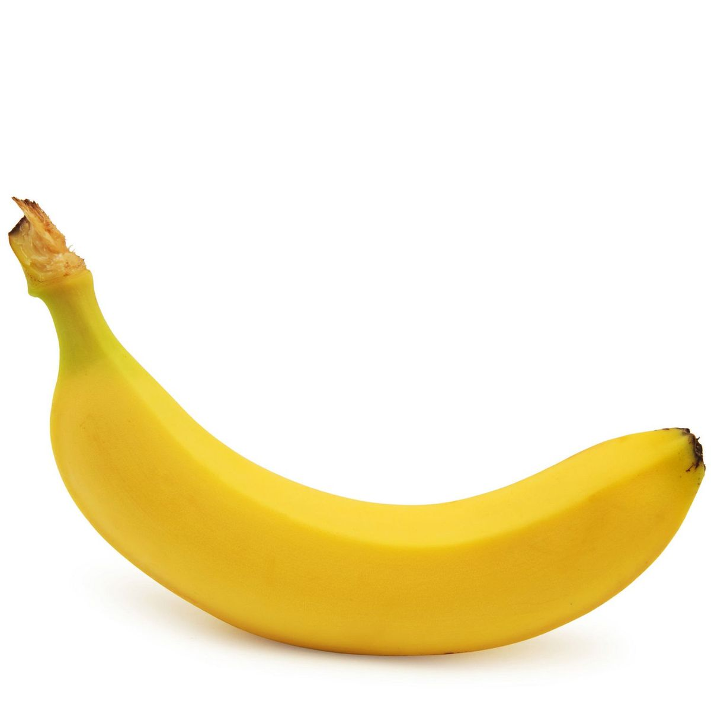

Banana

| Index |
|---|
| Short description |
| Nutritional value |
| Health benefits |
| Best time to eat |
| Who shoud avoid |
| Fun fact |
Short Description
Banana is a soft, elongated tropical fruit grown widely in warm regions. It is one of the most consumed fruits in the world and is known for its sweet taste and quick energy supply. Bananas are eaten raw, blended into smoothies, or used in desserts and snacks.
Nutritional Value
| Nutrient | Amount |
|---|---|
| Calories | 89 kcal |
| Carbohydrates | 23 g |
| Dietary Fiber | 2.6 g |
| Potassium | 358 mg |
| Vitamin B6 | 20% |
| Vitamin C | 15% |
Health Benefits
- Provides instant energy due to natural carbohydrates
- Improves digestion and prevents constipation
- Reduces muscle cramps by supplying potassium
- Supports heart health by regulating blood pressure
- Improves brain function through vitamin B6
Best Time to Eat
Bananas are best eaten in the morning or before physical activities like workouts or sports. They provide quick energy and help prevent fatigue.
Avoid eating bananas late at night because:
- They are heavy to digest
- Can increase mucus formation
- May cause bloating or cold
Best practice: Morning + ripe banana + not with cold foods.
Who Should Avoid
- Diabetic patients, due to natural sugars
- Kidney patients, because of high potassium
- People with cold, cough, or sinus issues
- Those with weak digestion, if eaten in excess
Fun Fact
- Bananas are berries botanically
- Banana plants are actually giant herbs, not trees
- There are over 1,000 varieties of bananas worldwide
- Bananas naturally help improve mood